This talk gives a concrete case for choosing a deterministic workflow versus a fully autonomous agent on the same real job (research outreach at scale), with named infra choices (Modal batch, GitHub Actions cron, LangFuse, Claude Agent S...
This traces the outreach pipeline as Niels described it, from nightly cron through Modal-parallelized agent containers to the model and tracing layer; the same underlying workflow appears to feed his separate Twitter bot (ours).
“Try to avoid building agents if you really don't have to. Start simple, start with a single LLM API.”
said at 05:43“they replaced 12,000 lines of custom code, pretty sophisticated workflow, with a very simple 200 lines of code skill.”
said at 09:52“to be honest, I don't disclose that it's an agent. Why? Because I think if people know it's a bot, then they might quickly like close the issue.”
said at 13:31“Every single container is basically one agent loop that is processing one GitHub issue.”
said at 11:57“I use it mostly for the tracing part, the observability part, just to see what is the LLM doing, what are the inputs, what are the outputs”
said at 07:48“out of the thousands of issues that are being created on Hugging Face, actually so far I've only had two negative comments.”
said at 14:01“recently crossed 90,000 followers without any involvement of me.”
said at 18:40“Post-training bench is another one uh where it actually beats Opus 4.8 and it's cheaper.”
said at 11:26The two-negative-comments figure is self-reported and the sample is one team's low-stakes, opt-out-friendly use case (research outreach), so it may understate pushback risk for agents operating in higher-stakes or less receptive channels.
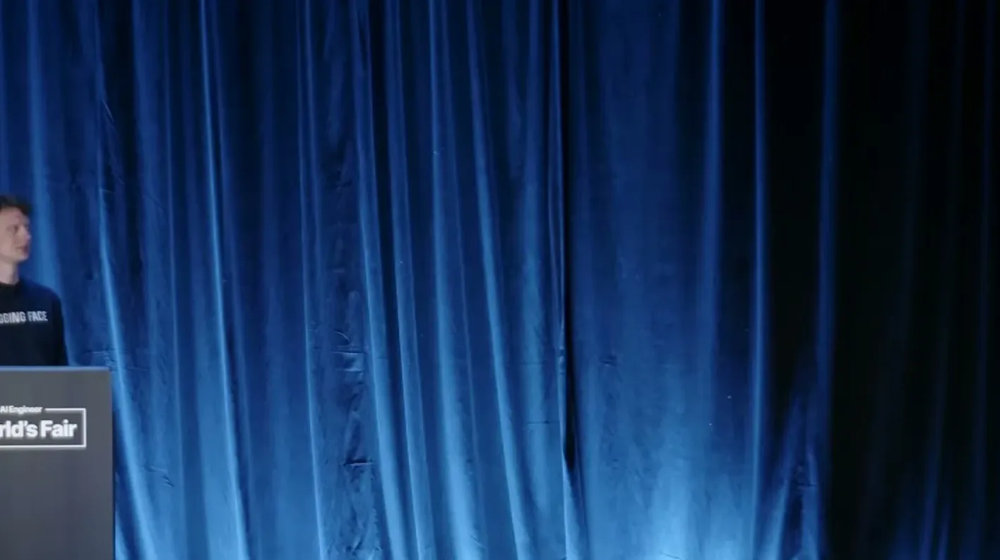
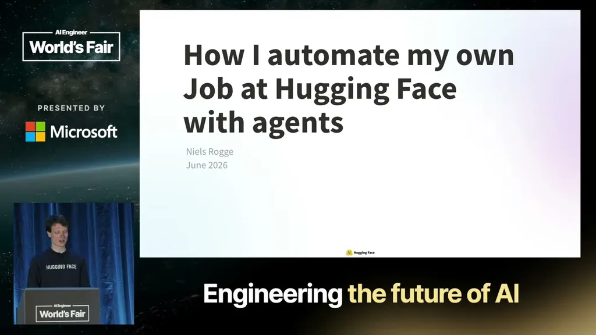
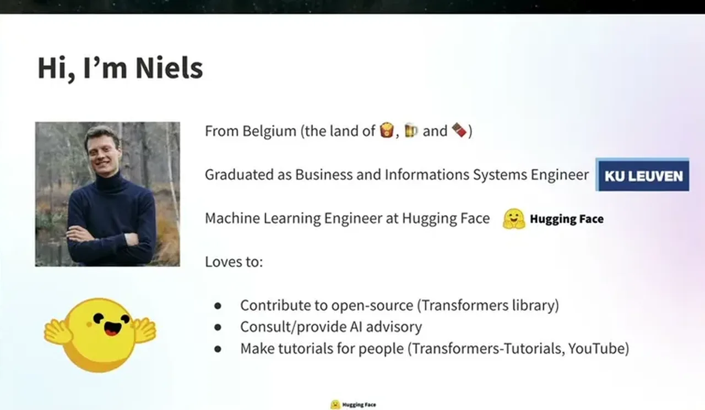
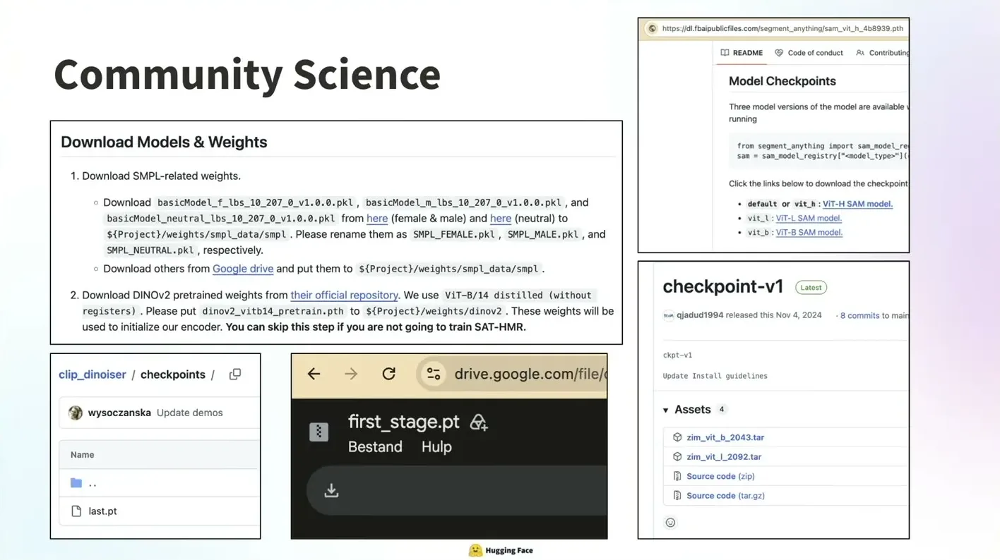
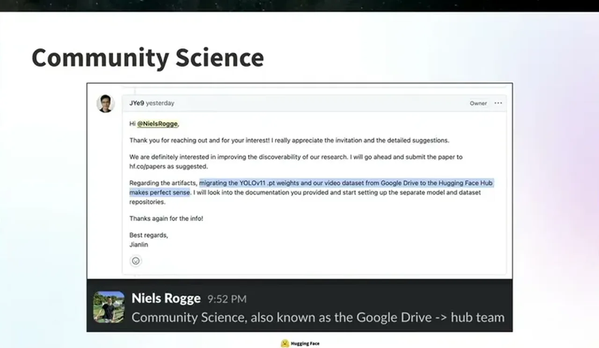
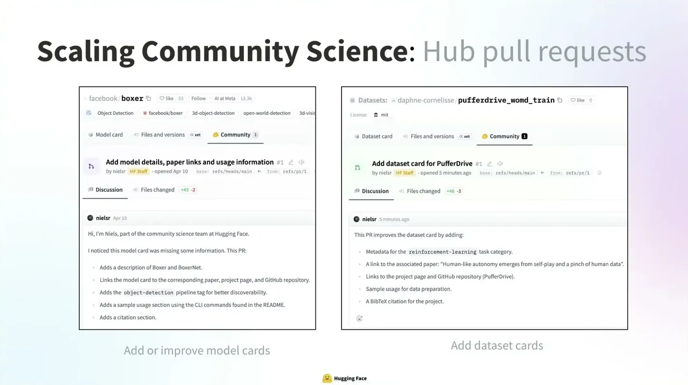
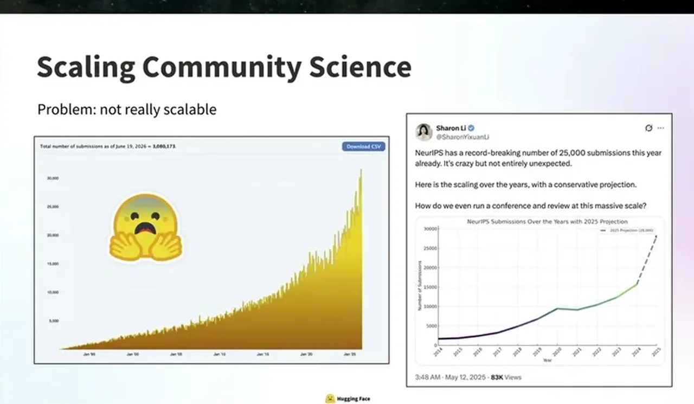
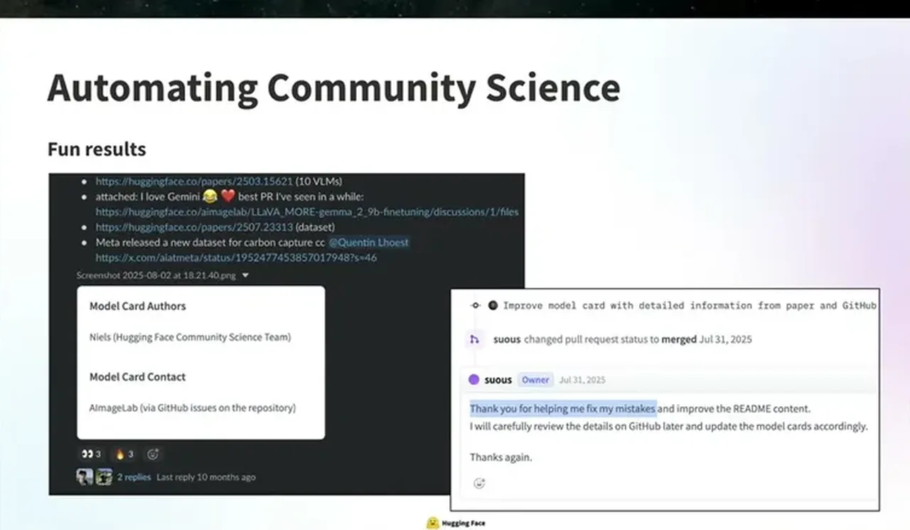
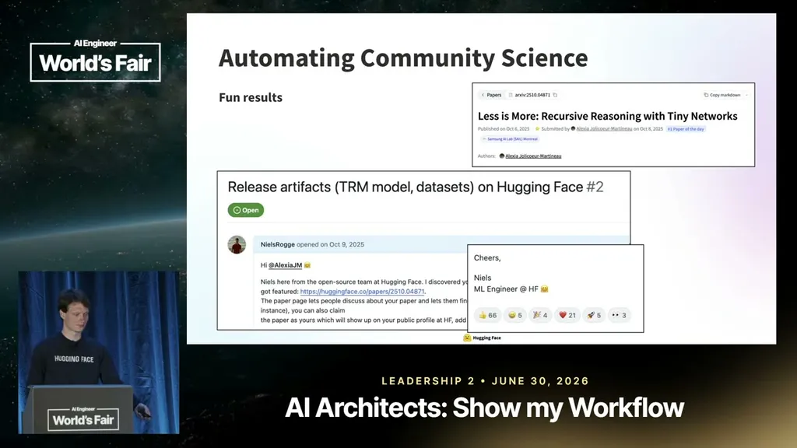
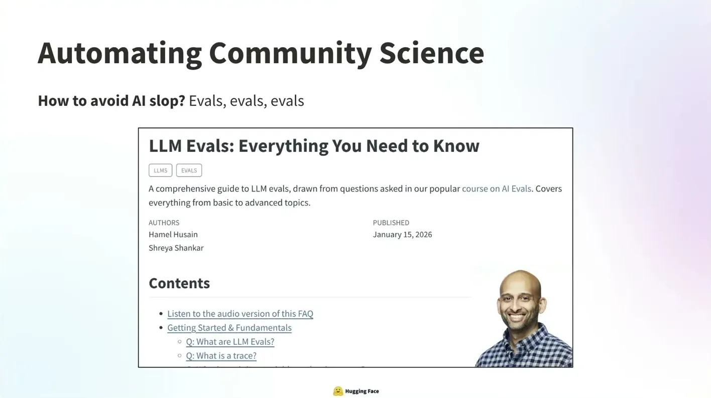
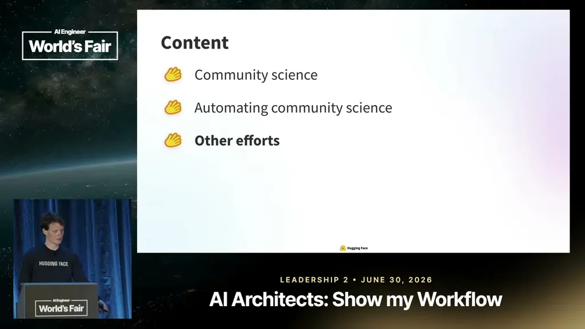
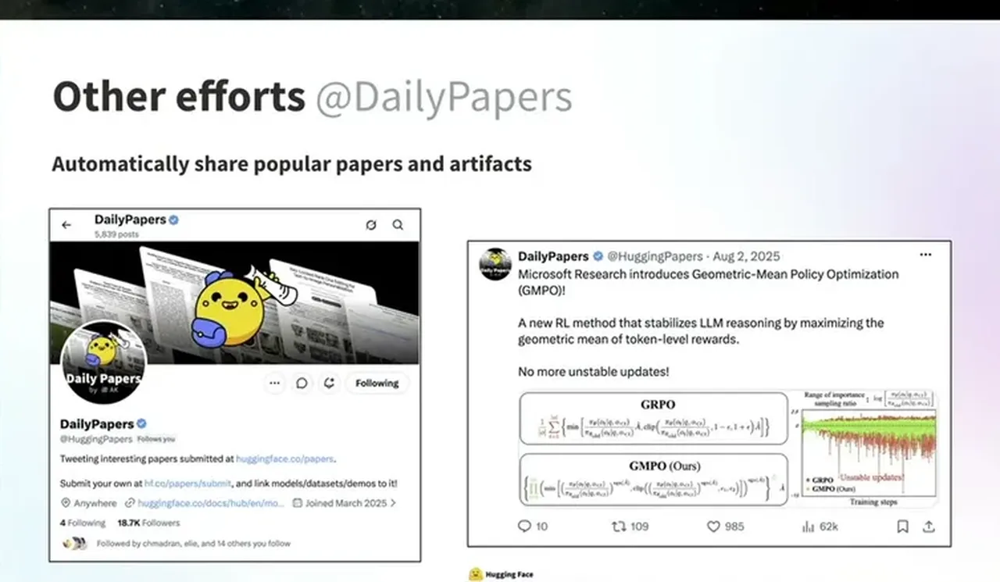
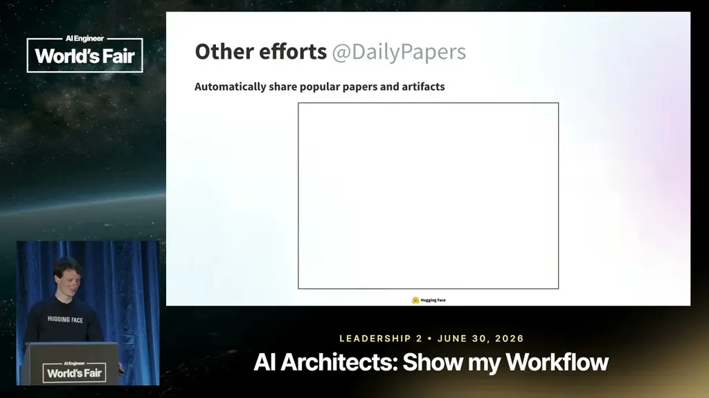
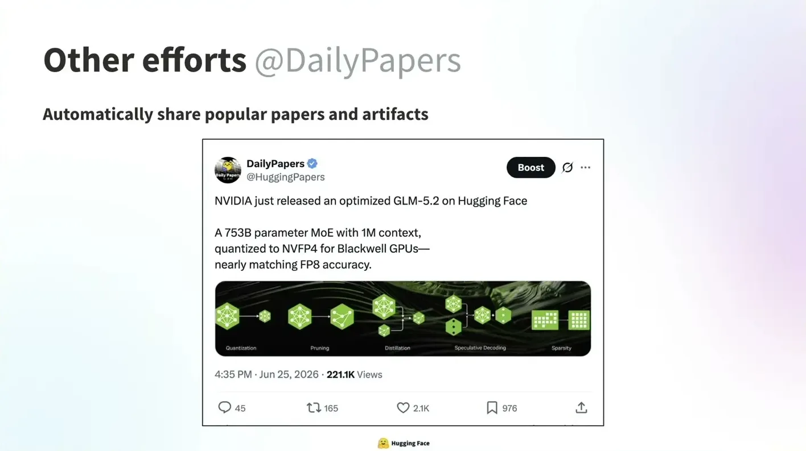
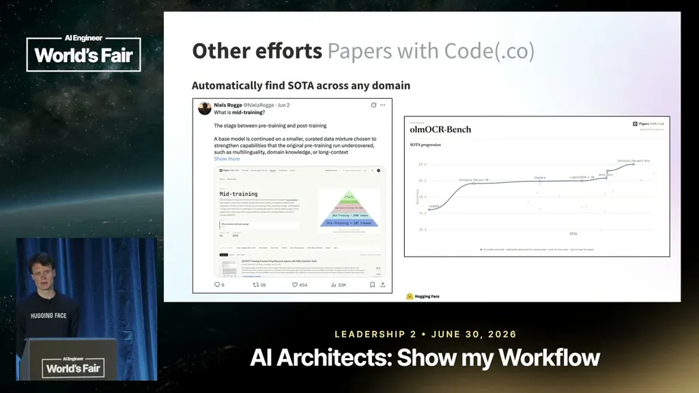
| Stance | Claim | t |
|---|---|---|
| asserts | Niels chose a deterministic workflow over an autonomous agent in 2024, following Anthropic's advice to start simple. | 05:43 |
| asserts | A related Cursor talk described replacing 12,000 lines of custom workflow code with a 200-line skill. | 09:52 |
| asserts | The follow-up agent runs as one parallel Modal container per GitHub issue. | 11:57 |
| asserts | Of the thousands of GitHub issues the agent opened, only two drew negative comments. | 14:01 |
| asserts | The Daily Papers Twitter bot passed 90,000 followers without any manual involvement. | 18:40 |
| asserts | Niels does not tell researchers the outreach is agent-generated because disclosure would likely cause them to close the issue quickly. | 13:31 |
| recommends | He recommends LangFuse for tracing and observability into agent prompts, outputs, cost, and latency. | 07:48 |
| asserts | GLM 5.2 reportedly beats Opus 4.8 on a post-training benchmark while being cheaper. | 11:26 |
Machine-readable copy embedded in this page (script#ontology) and in the corpus ontology.